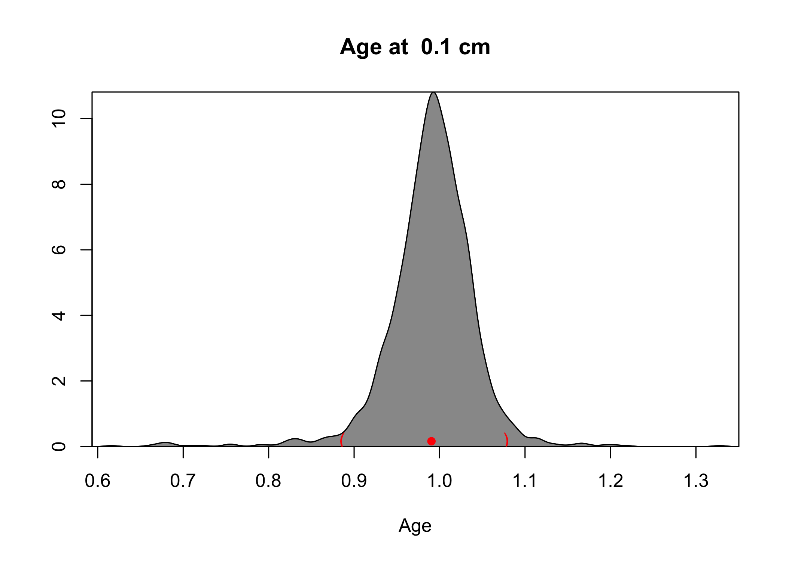
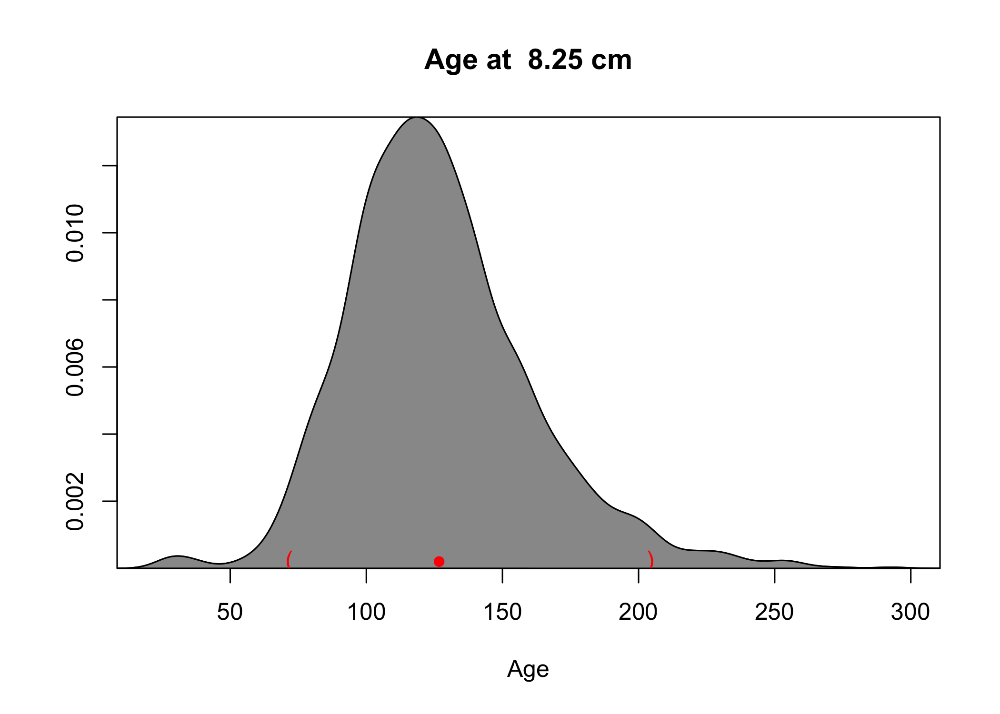
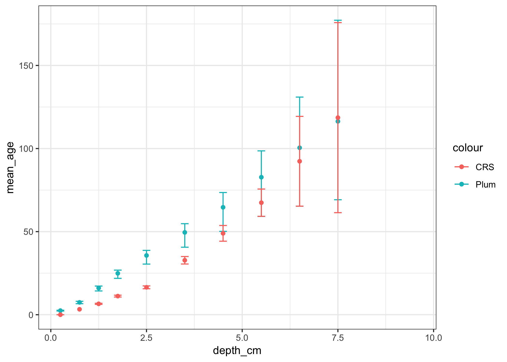

Paleolimnologists have been using the Constant Rate of Supply (CRS) and Constant Initial Concentration (CIC) model to interpret 210Pb dates for a very long time. Some variations like propagating error using a Monte Carlo simulation (Binford 1990 and Sanchez-Cabeza et al. 2014) instead of the usual “quadrature” method have been used, but for the most part, we have been interpreting lead-210 dates the same way since 1978 (40 years!).
We can definitely do better. Similar to how Bacon revolutionized the 14C dating world, Bayesian methods are the future of 210Pb dating as well. Bayesian methods are a bit hard to understand, but essentially, they involve creating millions and millions of age-depth relationships, only selecting the ones that are probable given some constraints. In this case, the constraints are that we have 210Pb activities that were measured (with some error), 210Pb decays at a known rate (if we’re being technical there’s error here too, but it’s always ignored), and the sedimentation rate of a given slice is related to the sedimentation rate of the previous slice. You can imagine that it would be possible to “check” any age-depth model to see if it actually would produce the 210Pb activities that you measured. Bayesian age-depth model creation is that. But millions and millions of times, keeping only the age-depth models that make sense.
In 2018, the first (to my knowledge) Bayesian 210Pb interpretation paper was published, and included a program to do the interpretation. Having just wrote an R package implementing the CIC and CRS models, I thought I’d give it a go! It turns out that the program as written is difficult to use (the authors acknowledge that this version is just a draft, and the paper indicates that it may be translated to C++ in the future). Still, it’s a massive step forward for those of us that rely on 210Pb dating (which is almost all of us paleolimnologists).
Some data
I’ll use the Alta Lake 210Pb measurements I have from my first published paper, which also happens to be the sample dataset for the pb210 package.
library(pb210)
alta_lake_pb210
## # A tibble: 32 x 13
## sample_id depth_cm total_pb210_Bq_… total_pb210_sd section_start_cm
## <chr> <dbl> <dbl> <dbl> <dbl>
## 1 AL-GC2-0 0.25 338. 8.71 0
## 2 AL-GC2-0… 0.75 NA NA 0.5
## 3 AL-GC2-1 1.25 415. 11.8 1
## 4 AL-GC2-1… 1.75 411. 11.0 1.5
## 5 AL-GC2-2 2.5 378. 10.5 2
## 6 AL-GC2-3 3.5 237. 7.79 3
## 7 AL-GC2-4 4.5 146. 5.25 4
## 8 AL-GC2-5 5.5 117. 4.61 5
## 9 AL-GC2-6 6.5 67.5 3.86 6
## 10 AL-GC2-7 7.5 54.6 3.44 7
## # … with 22 more rows, and 8 more variables: section_end_cm <dbl>,
## # water_percent <dbl>, slice_mass_g <dbl>, dry_density_cm3 <dbl>,
## # c_percent <dbl>, n_percent <dbl>, published_age_yr <dbl>,
## # published_age_sd <dbl>
ggplot(alta_lake_pb210, aes(x = depth_cm, y = total_pb210_Bq_kg)) +
geom_point() +
geom_errorbar(
aes(
ymin = total_pb210_Bq_kg - total_pb210_sd,
ymax = total_pb210_Bq_kg + total_pb210_sd
)
)

Using Plum
Plum (in its current form) is an R package that calls Python code to do the heavy lifting for the Bayesian statistics. Because it uses the rPython package, it can only be used on Unix-alike systems (Mac OS included!). On my MacOS machine, the following worked to install the R package.
install.packages("rPython", configure.vars= "RPYTHON_PYTHON_VERSION=2")
remotes::install_github("maquinolopez/Plum")
If you can load the package, it’s installed!
library(Plum)
## Loading required package: rPython
## Loading required package: RJSONIO
The Plum package requires its input as a CSV file (much like rbacon). I don’t particularly like this kind of interface, but I do very much appreciate the ability to do Bayesian lead-210 analysis, and with the tidyverse functions at one’s disposal, it’s not too bad. The CSV has to have the columns Depth (cm), Density g/cm^3, 210Pb (Bq/kg), sd(210Pb), Thickness (cm), 226Ra (Bq/kg), and sd(226Ra) (in that order!). The 226Ra (Bq/kg), and sd(226Ra) columns are options, according to the author’s tutorial. In my case, I don’t have any 226Ra data, so I’ll omit those columns. Note that everything has to be finite (no NA values!).
alta_lake_plum <- alta_lake_pb210 %>%
filter(!is.na(total_pb210_Bq_kg)) %>%
transmute(
`Depth (cm)` = depth_cm,
`Density g/cm^3` = dry_density_cm3,
`210Pb (Bq/kg)` = total_pb210_Bq_kg,
`sd(210Pb)` = total_pb210_sd,
`Thickness (cm)` = section_end_cm - section_start_cm
)
alta_lake_plum
## # A tibble: 18 x 5
## `Depth (cm)` `Density g/cm^3` `210Pb (Bq/kg)` `sd(210Pb)`
## <dbl> <dbl> <dbl> <dbl>
## 1 0.25 0.169 338. 8.71
## 2 1.25 0.153 415. 11.8
## 3 1.75 0.150 411. 11.0
## 4 2.5 0.183 378. 10.5
## 5 3.5 0.188 237. 7.79
## 6 4.5 0.229 146. 5.25
## 7 5.5 0.216 117. 4.61
## 8 6.5 0.269 67.5 3.86
## 9 7.5 0.191 54.6 3.44
## 10 8.5 0.197 39.2 2.95
## 11 9.5 0.276 39.7 3.13
## 12 10.5 0.280 42.1 3.22
## 13 11.5 0.183 37.7 2.90
## 14 12.5 0.210 31.5 2.93
## 15 13.5 0.254 29.2 2.03
## 16 14.5 0.276 23.7 2.00
## 17 15.5 0.343 23.9 2.11
## 18 16.5 0.494 25.0 1.98
## # … with 1 more variable: `Thickness (cm)` <dbl>
The CSV file needs to be in a very specific location in order for Plum to be able to find it. Apparently it needs to be given a core name, placed in a directory with that name, and be written to the file <core_name>.csv (within that directory). The documentation says this can be any folder, but I can’t make it work in anything other than the default (~/Plum).
dir.create("~/Plum/ALGC2", recursive = TRUE)
write_csv(alta_lake_plum, "~/Plum/ALGC2/ALGC2.csv")
To run Plumb, use the runPlumb() function. Note that this takes about 5 minutes on my machine, and may take longer on others (if you have 226Ra data and require that there is a different supported 210Pb concentration for each depth, apparently it will take longer). You have to tell it how many samples (counting from the bottom) are “background” (if there’s no 226Ra data). There’s some other options but it’s difficult to tell exactly what they do.
runPlum(Core.name = "ALGC2", number_supported = 9)
This function gave me a ton of errors, but I think they are all at the end when it’s trying to plot everything. I don’t want it to plot anything (I want the data output), so that’s fine with me. At least, the functions to extract the age distribution of each sample (the whole point!) seem to work. From some trial and error, it looks like you can get the age distribution at any age down to 8.25 cm. I’m not sure what defines this depth, but it’s helpful to know you will get a weird error if you request a depth that’s too deep.
first_age <- ageof(x = 0.1, folder = "~/Plum/ALGC2")

## [1] "the age of depth 0.1 is between"
## [1] 0.8861204 1.0776776
## [1] "with a 0.95% condifence interval and a mean of:"
## [1] 0.9904968
last_age <- ageof(x = 8.25, folder = "~/Plum/ALGC2")

## [1] "the age of depth 8.25 is between"
## [1] 71.80778 204.28006
## [1] "with a 0.95% condifence interval and a mean of:"
## [1] 126.7365
Unfortunately, it insists on plotting the distribution for you. I really just want the data, which in this case is a vector of ages (1999 of them) according to a bunch (1999) of probable age-depth models given the data we collected. It’s actually ingenious and is totally the way we should be interpreting age-depth models (but I could do without the plotting when I just want numbers).
Because ageof() fails given certain depths, extracting the distribution of ages for each sample is a little awkward. Here I use a little custom function that returns a tibble() instead of the list that is returned by ageof().
plum_ages <- function(depth) {
plum_obj <- try(ageof(x = depth, folder = "~/Plum/ALGC2"), silent = TRUE)
if(inherits(plum_obj, "try-error")) {
tibble(
mean_age = NA_real_,
lower_age = NA_real_,
upper_age = NA_real_,
data = list(numeric(0))
)
} else {
tibble(
mean_age = plum_obj$Mean,
lower_age = plum_obj$Lower_lim,
upper_age = plum_obj$Upper_lim,
data = list(plum_obj$Data)
)
}
}
alta_lake_ages <- alta_lake_pb210 %>%
mutate(plum_raw = map(depth_cm, plum_ages)) %>%
unnest()
alta_lake_ages %>%
select(depth_cm, mean_age, lower_age, upper_age)
## # A tibble: 32 x 4
## depth_cm mean_age lower_age upper_age
## <dbl> <dbl> <dbl> <dbl>
## 1 0.25 2.48 2.22 2.69
## 2 0.75 7.43 6.65 8.08
## 3 1.25 16.1 14.3 17.2
## 4 1.75 24.9 21.9 26.8
## 5 2.5 35.7 30.5 38.7
## 6 3.5 49.5 40.6 54.8
## 7 4.5 64.6 50.2 73.5
## 8 5.5 82.7 59.1 98.6
## 9 6.5 100. 65.3 131.
## 10 7.5 116. 69.2 177.
## # … with 22 more rows
Cool! Now we’ve got the data in an object we can plot. I’ll put the ages that we published on plot as well, for comparison.
alta_lake_ages %>%
filter(depth_cm < 10) %>%
ggplot(aes(x = depth_cm)) +
geom_point(aes(y = mean_age, col = "Plum")) +
geom_errorbar(
aes(ymin = lower_age, ymax = upper_age, col = "Plum"),
width = 0.2
) +
geom_point(aes(y = published_age_yr, col = "CRS")) +
geom_errorbar(
aes(
ymin = published_age_yr - published_age_sd,
ymax = published_age_yr + published_age_sd,
col = "CRS"
),
width = 0.2
)

It’s an interesting difference. It looks like the Plum model encourages more of a constant sedimentation rate than the CRS model (at least in my very limited dataset). Indeed, this is one of the assumptions of the Plum (and Bacon) age-depth model…that the sedimentation rate of one core slice is somewhat similar to that before it. It’s mostly a good assumption (probably a better assumption than a wildly varying sedimentation rate that is frequently inferred by the CRS model). It’s possible to set the prior distribution for this (I think it’s called “memory”), which may help steer Plum in the right direction.
The next step
Black-box solutions like Plum and Bacon are hard. They are hard to understand, and hard to depend on (code-wise) because they don’t have any unit tests and thus may fail in unexpected ways. I think that it may be possible to code these models in STAN, which has excellent R support. STAN is a domain-specific language for Bayesian models that allows a model such as that for Bacon and Plum to be coded in a 10-20 lines, rather than hundreds of lines of Python or C++. I’m taking a break from paleolimnology this summer, but look forward to getting back to this in the fall!